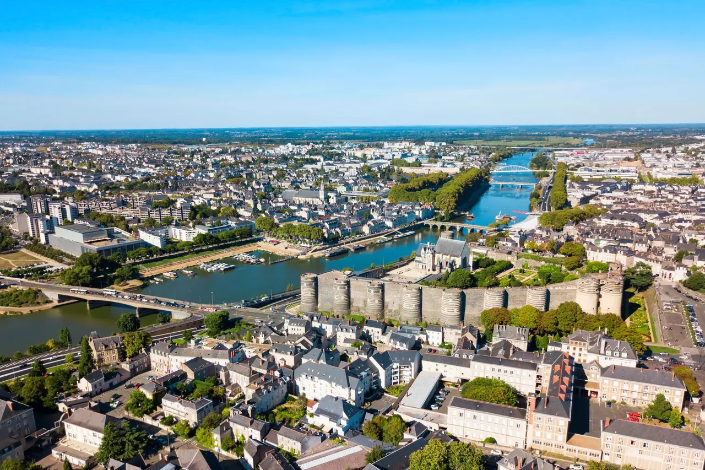
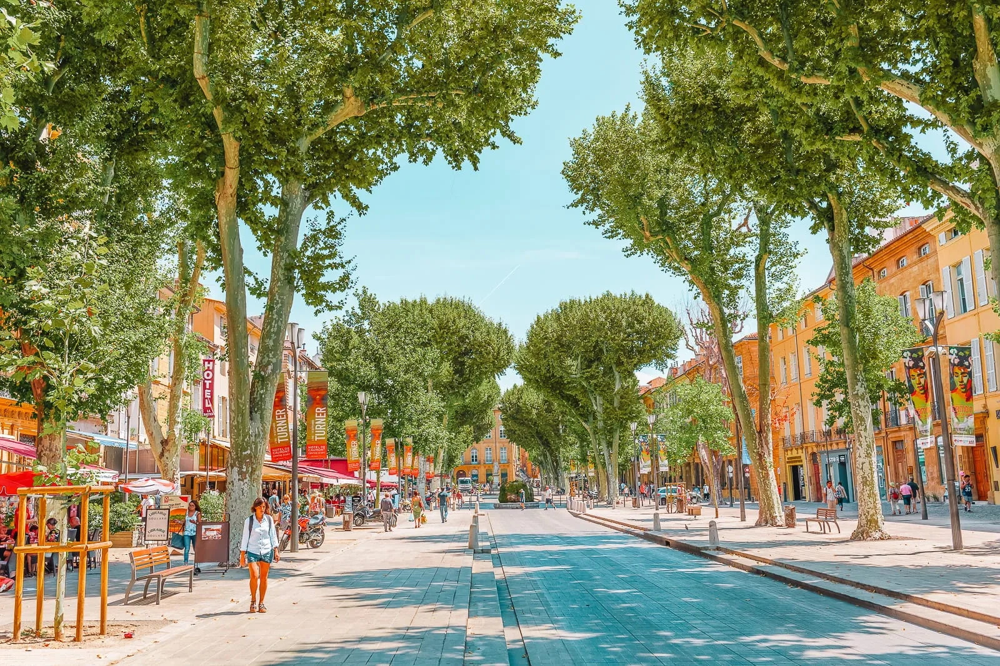
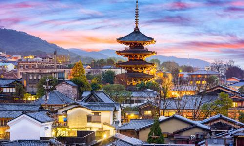
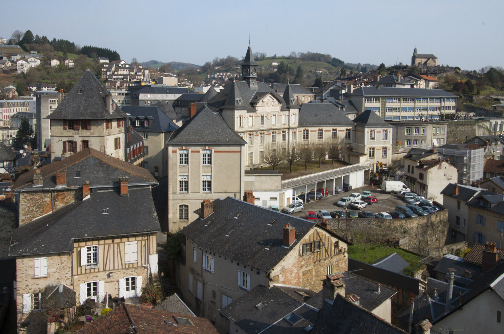
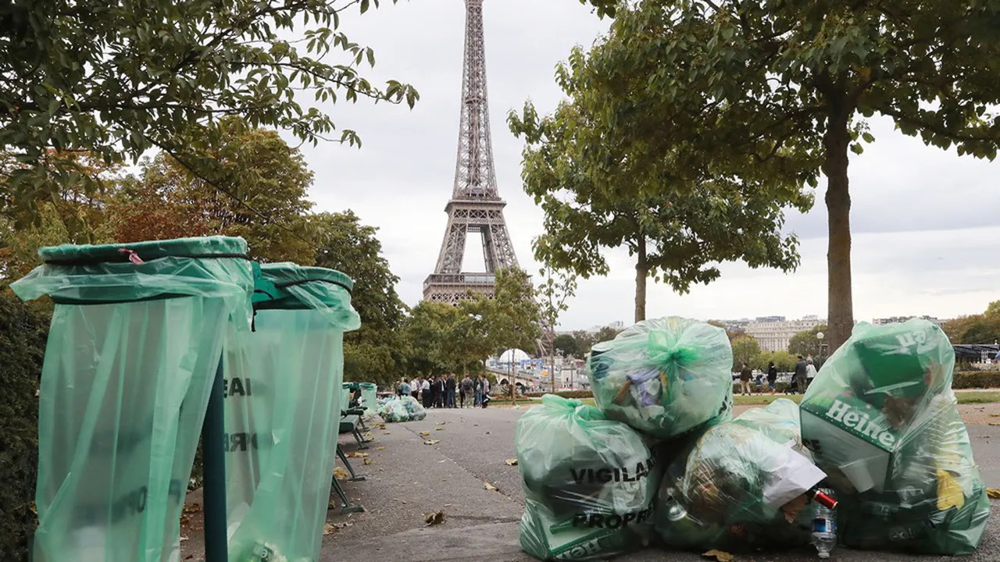

| N° | Ville | Pays | Confinement | Monuments | Image |
|---|---|---|---|---|---|
| 1 | Angers | France | Non |
|
 |
| 2 | Aix-En-Provence | Non |
|
 | |
| 3 | Kyoto | Japon | Non |
|
 |
| 272 | Tulle | France | Non |
|
 | 273 | Paris | Oui (3x) |
|
 | N° | Ville | Pays | Confinement | Monuments | Image |